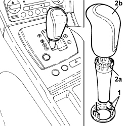
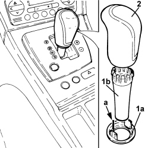

2135A16 AUTOMATIC TRANSMISSION LEVER HANDLE - R R
- Path
- Procedures > 21 GEARBOX UNIT > 2135 AUTOMATIC TRANSMISSION EXTERNAL CONTROLS > 2135A AUTOMATIC TRANSMISSION MANUAL CONTROLS > 2135A16 AUTOMATIC TRANSMISSION LEVER HANDLE - R R
- Kind
- repair procedure (removal / refitting; the operation number is the code)
- Applies to
- engines: 3.2 JTS; all production periods
- Interactive page
- https://sloeber94.github.io/elrnDB-aBrrSpdr/en/#/946004467
Applies to: engines: 3.2 JTS; all production periods
 Removing
Removing
 Refitting
Refitting1. Press the retaining clips and lower the gear lever grip lower seal.
2. Compress the retaining clips (2a) on the top part of the cover and then remove the gear lever grip (2b) upwards.

Applies to: engines: 3.2 JTS; all production periods
Refitting
Removing1. Place the lower seal (1a) and the cover (1b) on the gear lever.
2. Press fit the grip on the gear lever and lock the cover clips using the lower seal taking care to position the pin (a) as illustrated.
